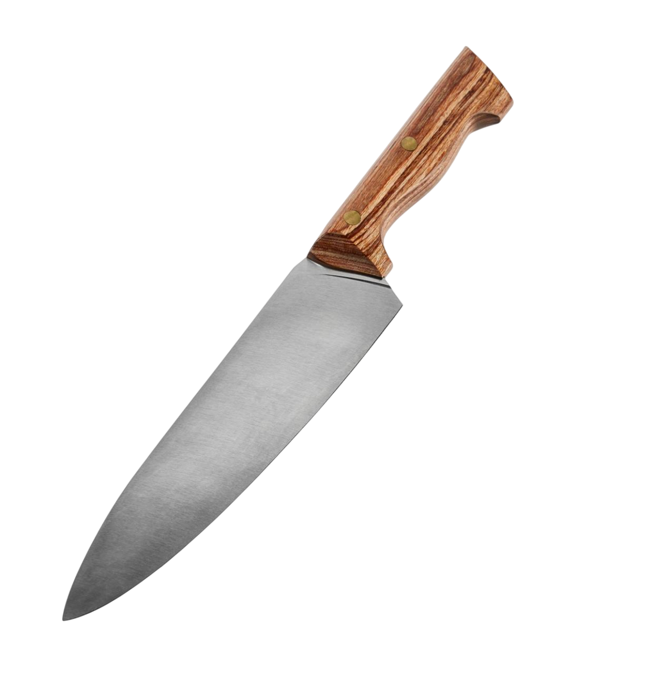
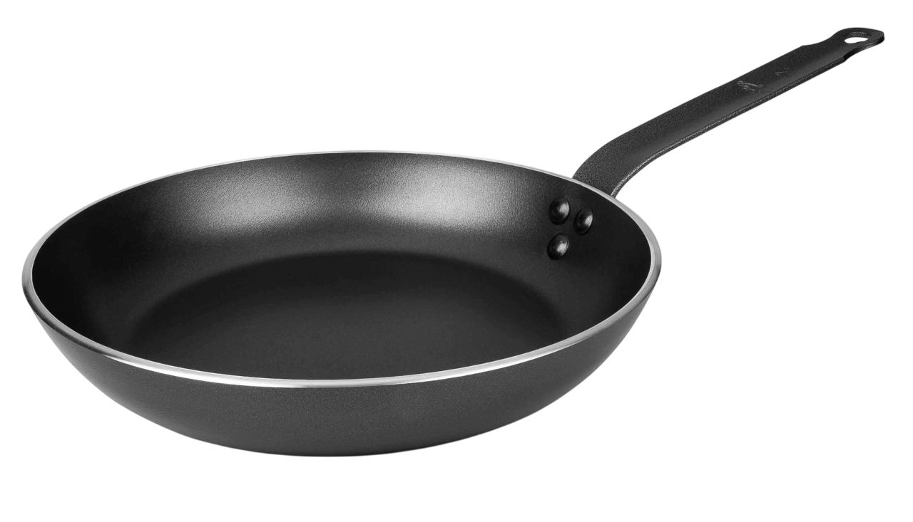
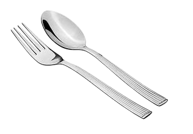
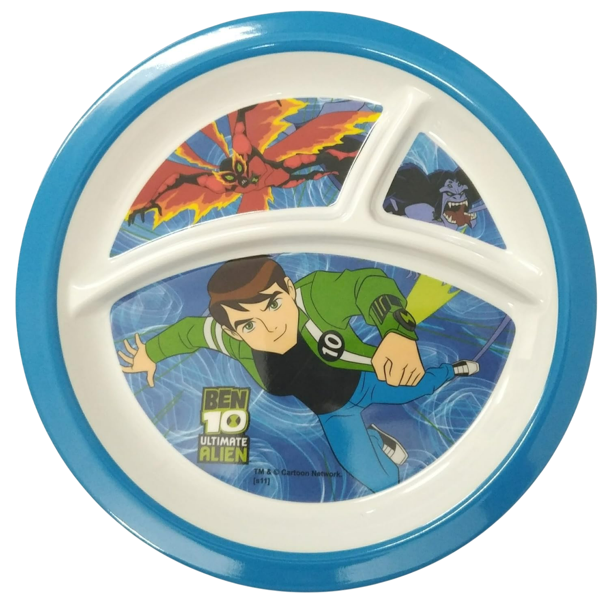
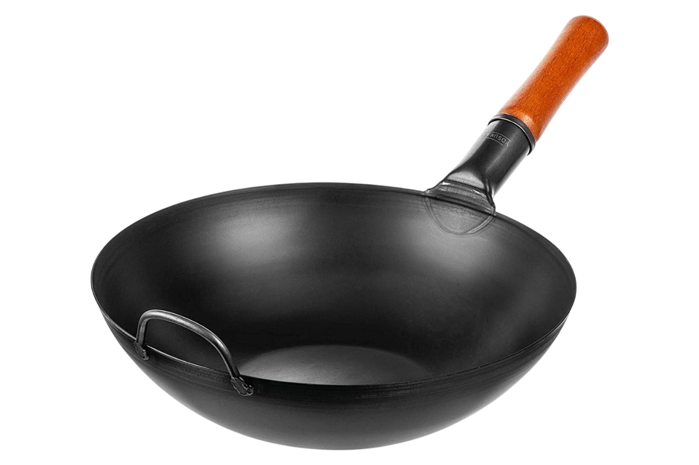
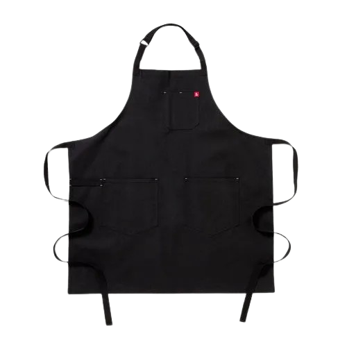
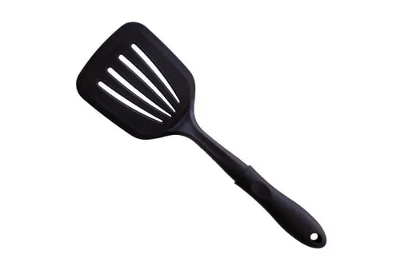
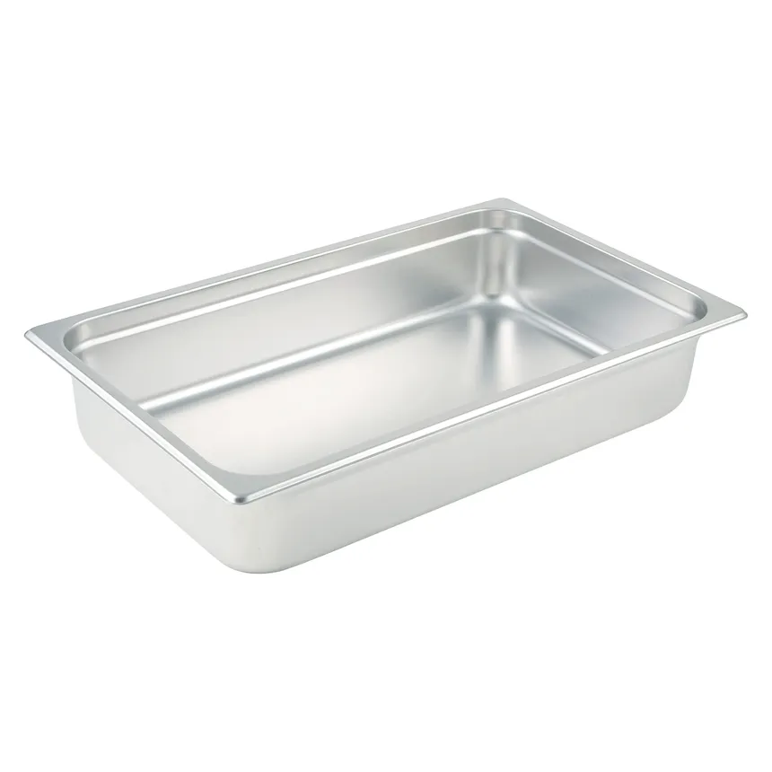
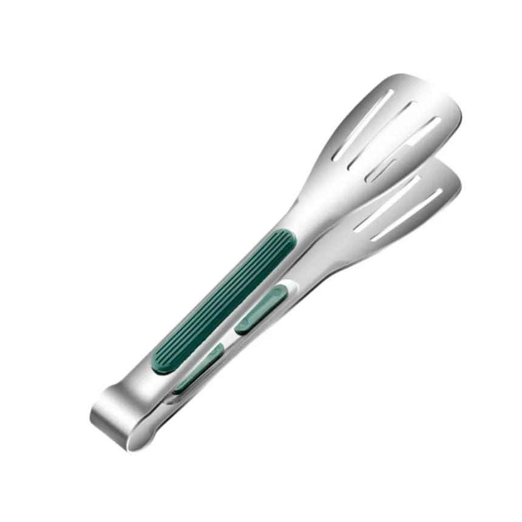

A flat surface used for cutting and preparing food. Made of wood, plastic, or bamboo, it helps protect countertops and knives during food preparation.
KD Chopping Board
₱149.00

A versatile tool used for cutting, slicing, and chopping ingredients with precision. Available in various sizes and blade types for different culinary tasks.
KD Knife
₱299.00

A frying pan with a special coating that prevents food from sticking, making it easier to cook and clean. Ideal for low-fat cooking and delicate foods like eggs and fish.
KD Non-Stick Pan
₱459.00

Basic utensils used for eating and serving food. The spoon is designed for liquids and soft foods, while the fork is used for piercing and lifting solid foods.
KD Spoon and Fork
₱99.00

A flat dish used for serving food. Plates come in various sizes and materials, including ceramic, glass, and plastic, and are essential for everyday meals.
KD Plate
₱129.00

A round-bottomed cooking pan commonly used in Asian cuisine. Ideal for stir-frying, deep-frying, and steaming, it allows for quick and even heat distribution.
KD Wok
₱599.00

A protective garment worn over clothing, typically tied around the waist, used to shield clothes from spills, stains, and splashes during cooking or other activities.
KD Apron
₱399.00

A versatile kitchen tool with a flat, often flexible blade, used for flipping, spreading, or mixing ingredients while cooking or baking.
KD Spatula
₱119.00

A shallow, metal container designed for steaming food, often used in conjunction with a steamer rack or lid to retain heat and moisture.
KD Steam Pan
₱299.00

A handheld kitchen utensil with two arms joined at a pivot, used for gripping, lifting, or turning food items such as meat, salad, or pastries.